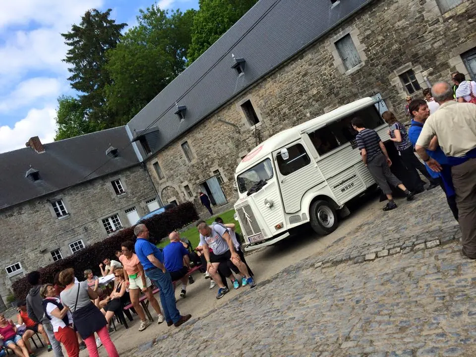

Plus de 200 personnes
Le Tube Citroën HY de 1975
Le food truck vintage sert les glaces au lait de ferme, à volonté, pour les événements privés ou d'entreprise. À la belle saison, on le retrouve aussi à la foire agricole de Libramont, à la foire d'Ettelbruck, à la brocante de Temploux ou au Fourneau Saint-Michel : agenda sur Facebook.